Click on a project to find out more.
NikitAI Repository
Work in progress. NikitAI is a personal AI assistant I'm building to help
manage day-to-day admin, run as an orchestrator over specialised sub-agents: Organiser
handles Outlook email and calendar via the Microsoft Graph API — reading and searching email,
summarising messages, managing mail folders, and creating calendar events, all through
natural language — while Platform Nerd is being built out to reason about my home
network and infrastructure with awareness of local logs and notes. A Trainer domain
for Garmin health and fitness data is planned next. When routing between domains is unclear,
the orchestrator asks rather than guesses.
Any action with a real-world consequence — sending an email, creating a calendar event,
deleting a mail folder — is gated behind an explicit human confirmation step enforced in
code, not just prompted for, so nothing happens without in-the-loop approval regardless of
what the model decides. Authentication uses MSAL's device-code flow against Azure AD, with
local token caching.
Runs as a FastAPI backend with a custom lightweight web UI (chat interface with Approve/Deny
buttons for confirmations), currently local-only. Next up: self-hosting on my Raspberry Pi as
its own service, secure external access, app-level authentication, voice input/output, and
finishing out the Platform Nerd and Trainer domains.
Architecture Overview
Tech Stack
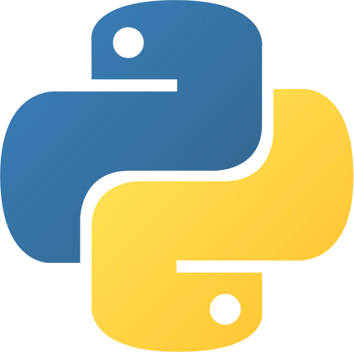
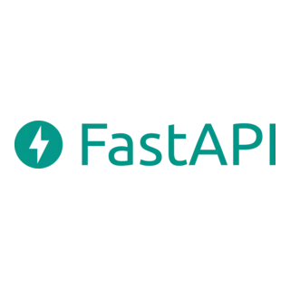
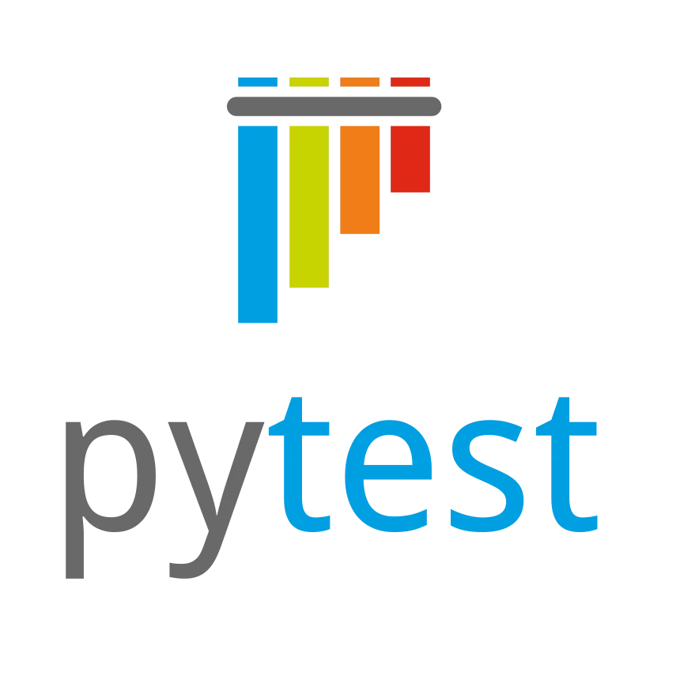

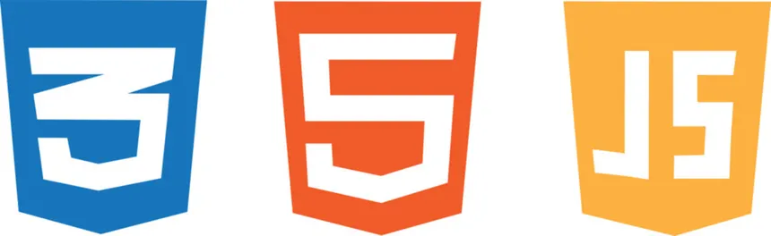
Example Interaction
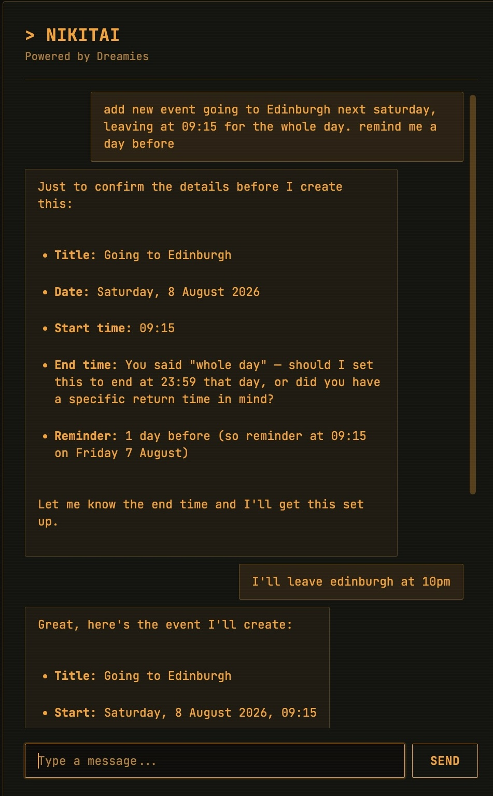
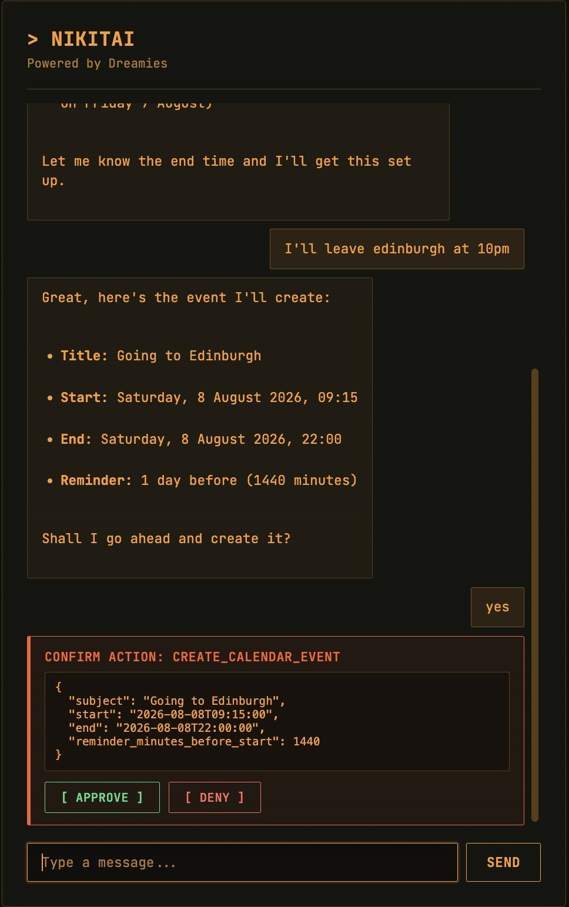
My Website Repository
This project connects to the Spotify API to surface what I'm currently listening to, along with my most-played tracks for the month.
It's a small example of integrating a third-party API into a live application, handling authentication, data retrieval, and dynamic rendering on the frontend.
The Spotify section is powered by a backend endpoint that retrieves data from the Spotify API and returns it to the frontend as JSON.
The JavaScript on this page then fetches that data and dynamically updates the page with my current track and recent listening activity.
This gave me a chance to work with API authentication, JSON responses, frontend DOM updates, and serving dynamic content from a self-hosted site.
Tech Stack
Notebook Data Refresher Repository
In order to refresh my memory on data analysis techniques for a project at work,
I built a Jupyter-based data analytics workspace for exploring customer, product,
and order datasets.
The project uses Pandas to inspect and analyse raw mock data from CSV files,
with separate notebooks for customer,product, order, and combined analysis.
I also created a PostgreSQL-backed workflow using SQLAlchemy and psycopg2. The database notebook loads
connection settings from environment variables, creates relational tables for customers, products, and
orders, and ingests the CSV data into a local PostgreSQL database for querying and analysis.
The analysis notebooks use Matplotlib, Seaborn, and Plotly to produce visualisations covering a
variety of metrics that can be seen below.
Tech Stack

Example Data
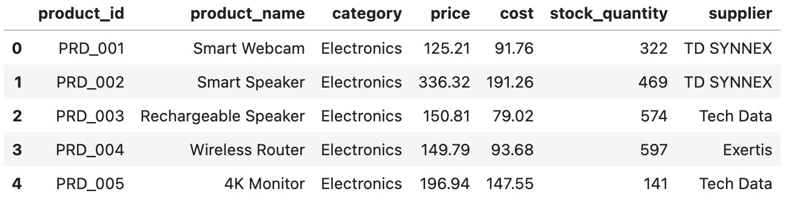
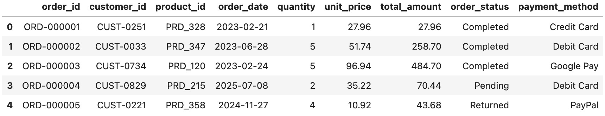
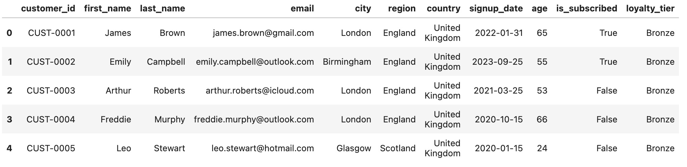
Analysis
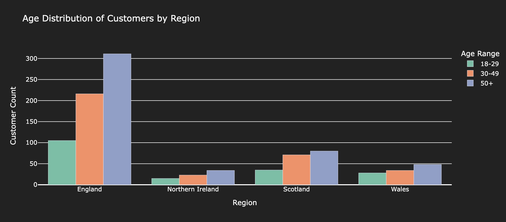
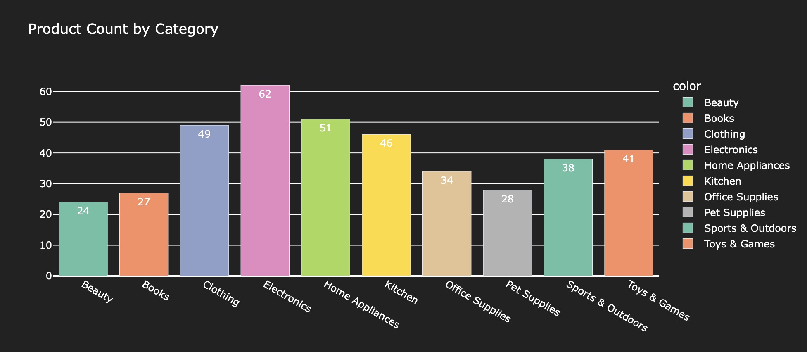
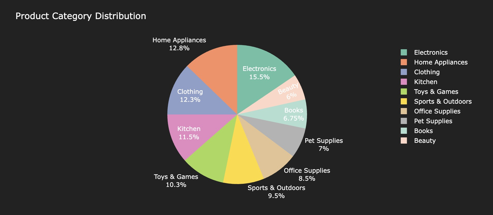
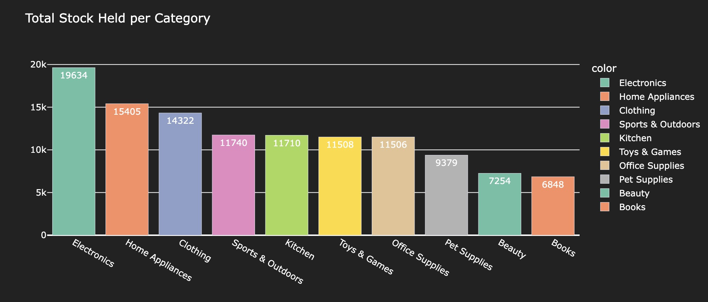
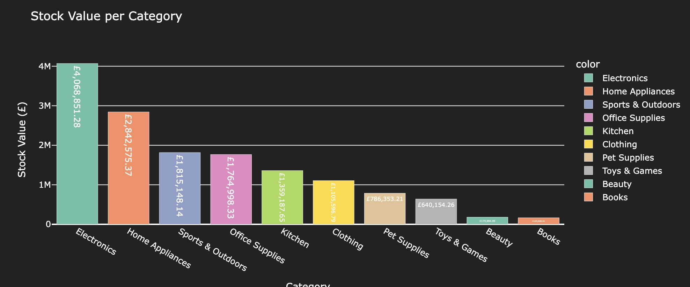
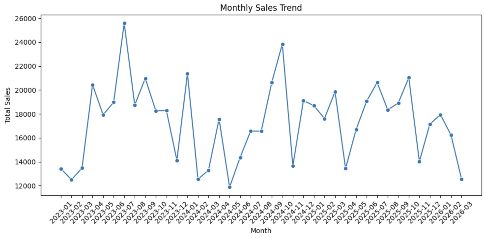
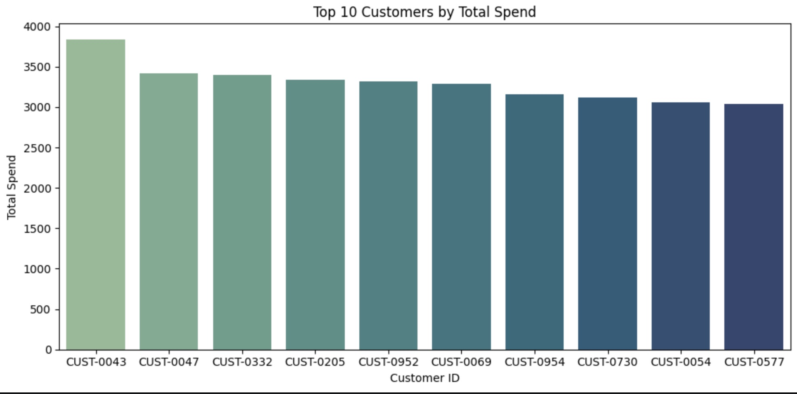
Met Office ETL Repository
I designed and built an automated ETL pipeline that extracts weather forecast data from the Met
Office Global Spot API, transforms it, and loads it into an AWS RDS (MySQL) database for analysis,
with secure access provided via a bastion EC2 host and SSH tunneling.
Provisioned with Terraform, the pipeline is fully cloud-native, running daily on ECS Fargate and
triggered by EventBridge. Raw forecast data is first stored in S3, then processed using Pandas to clean and prepare the data before loading it into the database with SQLAlchemy. Deployment
and execution are monitored via CloudWatch.
The Python ETL application is fully containerised with Docker, enabling consistent deployment across
environments. CI/CD pipelines are implemented using GitHub Actions to automate code quality checks,
testing, and deployment to ECS Fargate.
Tech Stack
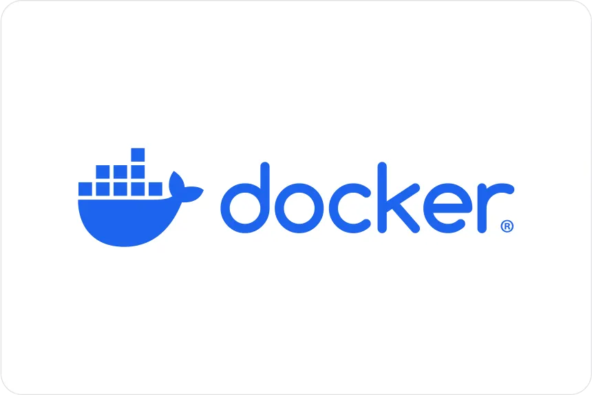
Infrastructure Diagram
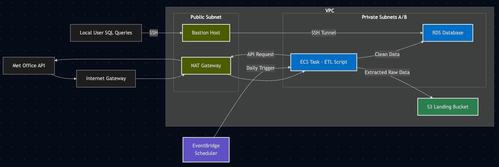
Example Data
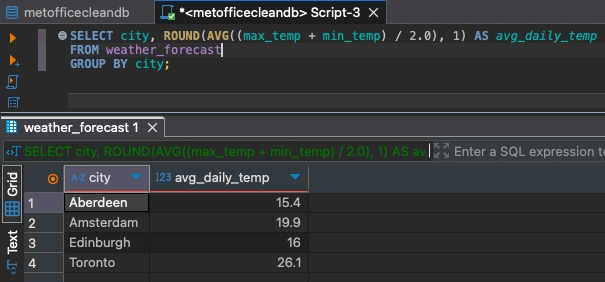
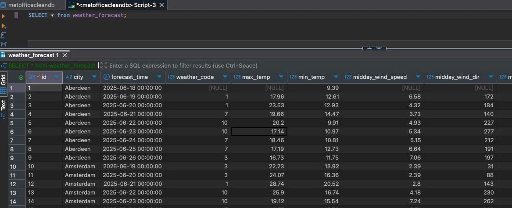
Word Wheel Solver Repository
I developed a Python application to solve word wheel puzzles using the EWOL dictionary to
identify
all valid words.
The application can be used via a command-line interface or accessed through a Flask-based API,
which is integrated into a simple web interface further down this page.
A GitHub Actions workflow automatically runs unit tests and enforces PEP8 formatting before
changes
are pushed to the repository.
Upon successful unit testing, a second workflow deploys the app locally to my Raspberry Pi.
API requests are routed through an Nginx reverse proxy.
Try it out:
Tech Stack
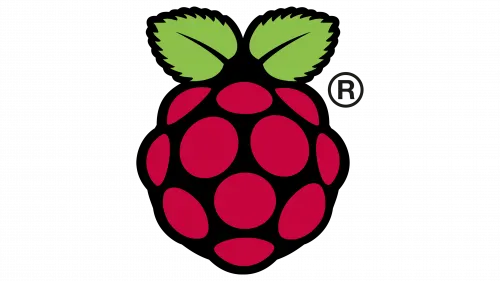
Task Manager Repository
I developed a Java application to manage and schedule email reminders for day-to-day tasks and
events, with all task data persisted to a CSV file on the host system-deployed on my Ubuntu
Raspberry Pi 5.
The app provides a CLI interface for adding, viewing, and deleting events, as well as
configuring
reminder times.
A separate daemon process continuously monitors the CSV file, automatically dispatching email
notifications as tasks are due and performing daily cleanup of expired events. The
entire solution is Dockerized for portability and automation.
I implemented a GitHub Actions CI/CD pipeline to build, test, and publish multi-architecture
Docker
images, with deployment orchestrated to my Raspberry Pi via a self-hosted runner upon each push
to
the repository.
Tech Stack
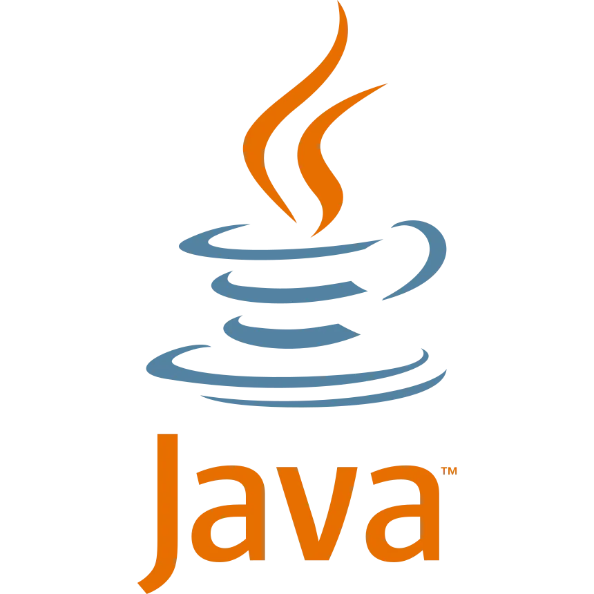
CLI Snapshot
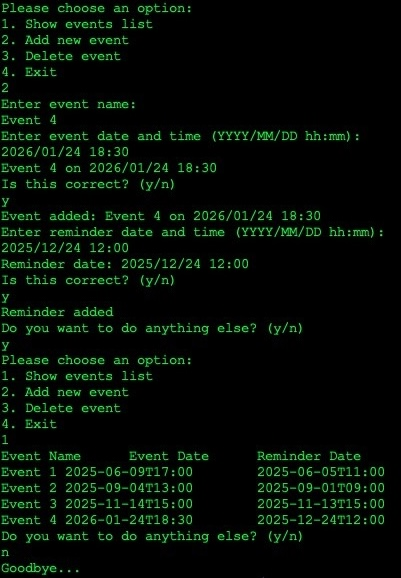
My Website Repository
This website was built using HTML, CSS, and JavaScript. It is hosted from home on my Ubuntu
Raspberry Pi using Nginx.
A self-hosted GitHub Actions runner on the Pi handles deployment locally on a Git commit, and
the
site is served securely
over HTTPS.
Dynamic DNS is implemented with a scheduled script that updates my Cloudflare DNS records
every 10 minutes, ensuring the domain always resolves to my current
public IP.
Tech Stack
Rock Paper Scissors Repository
One of my assessments during Ten10's Core Training was to develop a
Rock Paper Scissors game in Java in 8 hours. The game features a simple CLI interface
and allows users to play a single round, or best of three, against the computer, which randomly
selects its
moves.
Tech Stack
Gameplay Screenshot
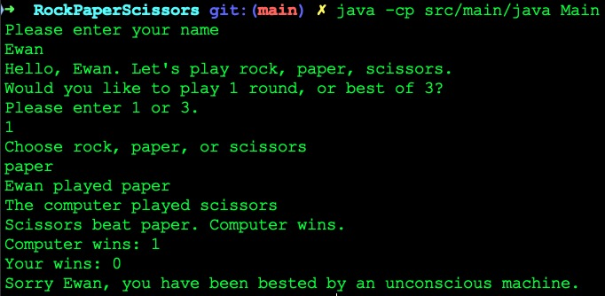
Project Onyx ETL Repository
For my final project of Northcoders' data engineering bootcamp,
my small team created an ETL pipeline that extracted data from a Postgres OLTP database,
stored it in AWS S3, processed it via Lambda functions, and loaded it into an OLAP Postgres DB.
We monitored with Cloudwatch, used AWS Secrets Manager for credentials, and deployed with
Terraform.
Code was tested using Pytest via a GitHub Actions pipeline.
Tech Stack
Infrastructure Diagram
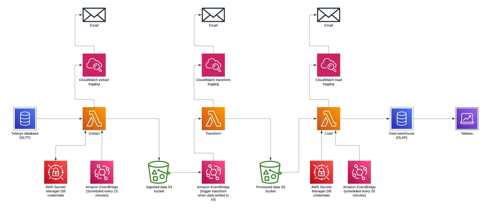